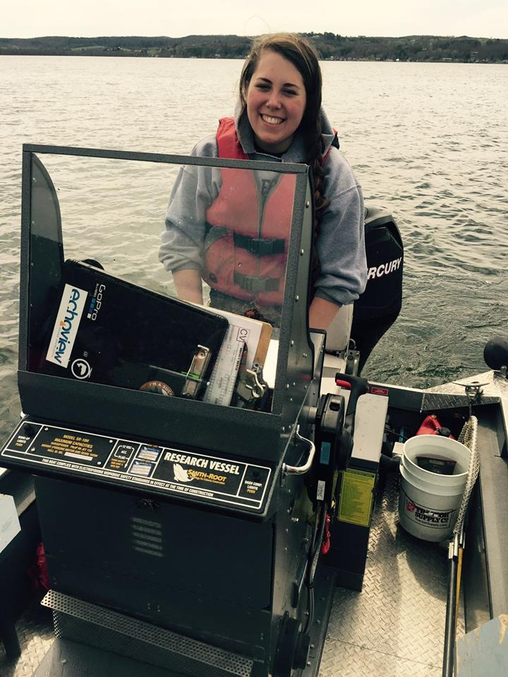
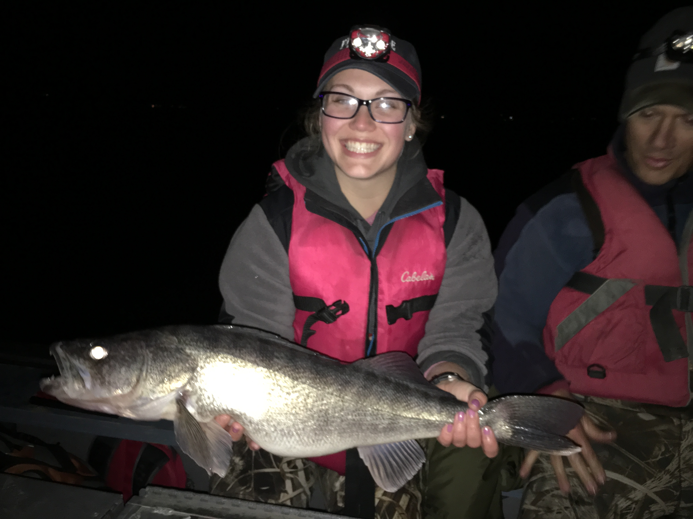
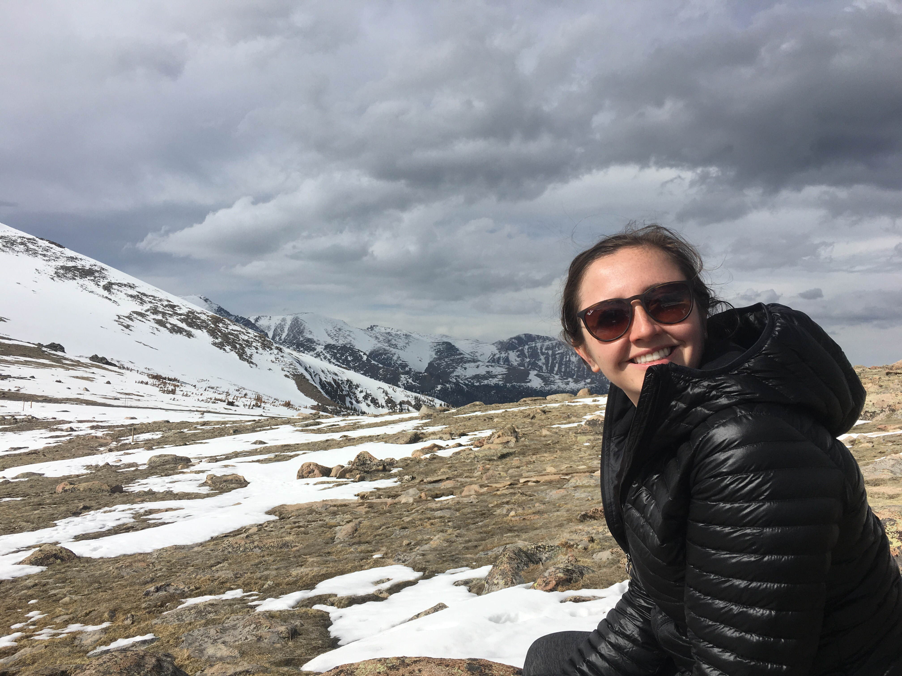

Current graduate students

Matthew Best
Program: MS Biology
Project description: I am working on a study of American Shad in the Delaware River focused on the age structures, genetic markers, and otolith micro-chemisty in semelparous and iteroparous spawners. I have previously worked with American Shad in the Hudson and Delaware Rivers as a technician for the NYSDEC, and I am excited for the opportunity to continue working with this important anadromous fish!

Samantha Carey
Program: MS Lake Management
Project description: State of the lake and comprehensive management plan for Forest and Allure lakes in NY.

Hayley Dower
Program: MS Biology
Project description: I am currently studying population dynamics and behavior of spawning walleye in Otsego Lake, NY. I am attempting to characterize the timing and duration of spawning, and I am using mark and recapture of tagged walleye to estimate growth, survival, and abundance.
Erin Gilligan
Program: MS Biology
Project description: American shad population dynamics and growth modeling in the northeastern US.
David Pfuhler
Program: MS Lake Management
Project description: State of the lake and comprehensive lake management plan for Crumhorn Lake, NY.

Alexa Tumbarello
Program: MS Lake Management
Project description: Paradox Lake is a dual-basin lake in Essex County, NY. The biggest concerns among stakeholders include invasive macrophytes, water clarity, and long-term sustainability. For my thesis, I am developing a state of the lake report and comprehensive management plan for the Paradox Lake Association that addresses stakeholder-identified issues and guidance for sustainable management.
Former graduate students
Stradder Caves: MS Lake Management (2019)
David Andrews: MS Lake Management (2019)
Joseph O’Reilly: MS Lake Management (2019)
George Smith: MS Lake Management (2019)
Ryan Elliott: MS Lake Management (2019)
Joseph (Ben) Casscles: MS Lake Management (2018)
Edward Kwietniewski: MS Lake Management (2017)
Christian Jenne: MS Lake Management (2017)
Alejandro (AJ) Reyes: MS Lake Mangement (2016)
This work is licensed under a Creative Commons Attribution 4.0 International License. Data are provided for educational purposes only unless otherwise noted.